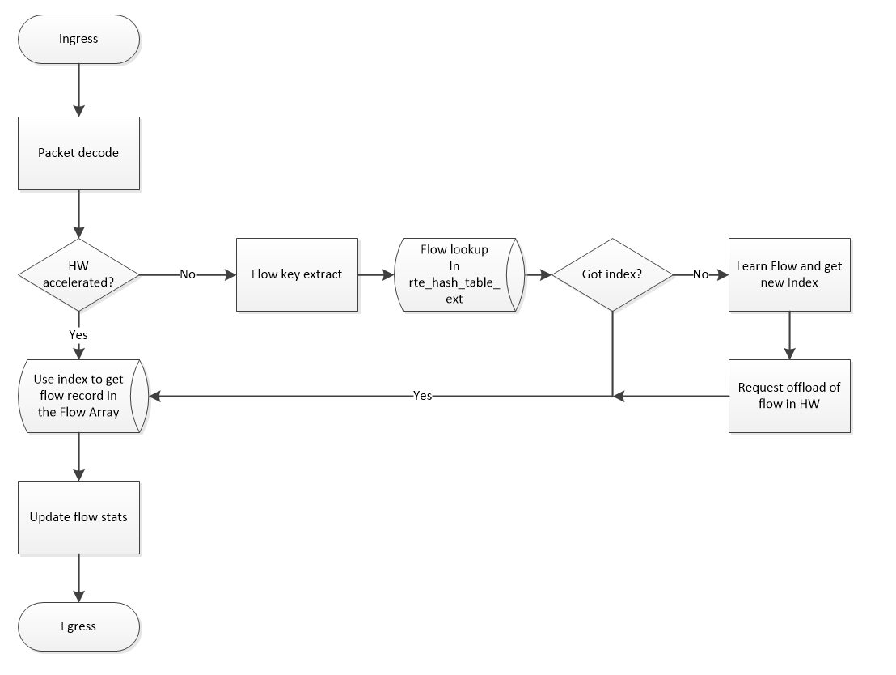

Flow Acceleration

DPDK 17.02’s rte_flow, the framework of hardware acceleration.
- flowtable-hwaccel-flowchart

napatech’s illustration:
- Acceleration in HW is Boosting Performance. In DPDK 17.02 rte_Flow is the Enabler
- ACL HW acceleration in VPP shows great performance improvements
DPDK’s flow acceleration framework
flow attribute, item and action, see rte_flow.h
- Pattern items fall in two categories:
- Matching protocol headers and packet data, usually associated with a specification structure. These must be stacked in the same order as the protocol layers to match inside packets, starting from the lowest.
- Matching meta-data or affecting pattern processing, often without a specification structure. Since they do not match packet contents, their position in the list is usually not relevant.
- Supported actions, they fall in three categories:
- Actions that modify the fate of matching traffic, for instance by dropping or assigning it a specific destination.
- Actions that modify matching traffic contents or its properties. This includes adding/removing encapsulation, encryption, compression and marks.
- Actions related to the flow rule itself, such as updating counters or making it non-terminating.
- eth_filter_ctrl_t, e.g. ixgbe_dev_filter_ctrl, i40e_dev_filter_ctrl
- Pattern items fall in two categories:
example of flow aaceleartion, generate_ipv4_flow
1
2
3
4
5
6initialize of struct rte_flow_attr
--> struct rte_flow_item
--> struct rte_flow_action
--> rte_flow_create()
--> eth_filter_ctrl_t, e.g. ixgbe_dev_filter_ctrl
--> struct rte_flow_ops's create, e.g. ixgbe_flow_create